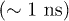
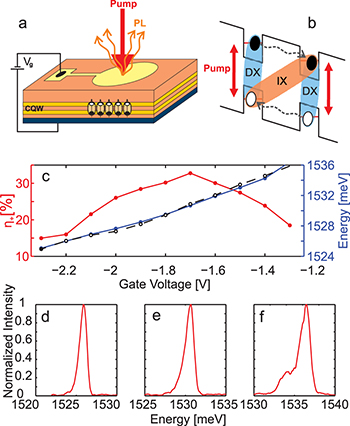
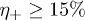
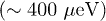
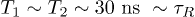

epl17031
10.1209/0295-5075/110/27001
17031
Letter
70 Condensed matter: electronic structure, electrical, magnetic, and optical properties
Long-lived spin coherence of indirect excitons in GaAs coupled quantum wells
Long-lived spin coherence of indirect excitons in GaAs coupled quantum wells
Long-lived spin coherence of indirect excitons in GaAs coupled quantum wells
Long-lived spin coherence of indirect excitons in GaAs coupled quantum wells
BeianMussie1
AlloingMathieu13
CambrilEdmond2
CarbonellCarmen Gomez2
OsmondJohann1
LemaîtreAristide2
DubinFrançois13(a)
1ICFO-The Institute of Photonic Sciences - Av. Carl Friedrich Gauss, num. 3, 08860 Castelldefels, Spain
2Laboratoire de Photonique et Nanostructures, LPN/CNRS - Route de Nozay, 91460 Marcoussis, France
3Institut des Nanosciences de Paris, CNRS and UPMC - 4 pl. Jussieu, 75005 Paris, France
francois.dubin@insp.jussieu.fr
42015
3042015
1102270013012015742015
Abstract
We study spatially indirect excitons confined in a symmetric GaAs double quantum well. We show that the spin polarisation
of very dilute gases can be optically imprinted, in both pure and superposition states. In the regime where indirect excitons
can be localized, we observe at 350 mK that the excitons spin degree of freedom is frozen with a relaxation time comparable
to the coherence time and to the radiative lifetime
 .
.
73.63.Hs78.47.jd
Over the last decade, the spin degree of freedom of semiconductor excitons has been intensively studied, both experimentally
and theoretically. The mechanisms responsible for excitons spin flips have first been identified in the regime where excitons
are delocalised. These include momentum scatterings to flip electron spins, energy relaxation in the valence bands to flip
hole spins as well as inter-band Coulomb (exchange) scatterings [1–4]. Usually, they lead to short
exciton spin relaxation times [5–7]. By contrast, in the regime where excitons are confined in every direction, e.g. in a quantum dot, the spin relaxation is damped by the quantisation of the excitons momentum and its resulting distribution
of accessible energy states. Excitonic spins can then be “frozen” with a relaxation time increased to about 10 ns [8], i.e. an order of magnitude longer than the excitons radiative lifetime
, which actually sets an upper bound for spin manipulations. Localized excitons with a long radiative lifetime are in fact
among the most promising candidates to develop semiconductor architectures for quantum information science [9].

The lifetime of semiconductor excitons may be directly tuned through the spatial overlap between the excitons constituents.
This is notably achieved in electrically biased coupled quantum wells where one enforces a spatial separation between electrons
and holes. Thus, spatially indirect excitons are engineered. Here, we show that indirect excitons have a long-lived spin coherence,
of the order of the radiative lifetime
. This is achieved below a few kelvins in a very dilute regime where indirect excitons can be localized. Thus, we observe
that photo-injected electrons and holes have a frozen spin. This allows us to program all-optically arbitrary spin polarizations
for indirect excitons, e.g. pure or superposition states. Let us then note that our experiments are performed on a spin ensemble distributed over
. The average spin polarisation is then manipulated at an efficiency a priori limited by inhomogeneous broadening, i.e. by the spatial variations of the effective magnetic field acting on individual spins. We therefore expect our degree of control
to be significantly enhanced at the single-exciton level using the appropriate technology [10].
To probe the excitons spin degree of freedom, polarisation-resolved photoluminescence provides a direct and handful approach [1–3]: Photoluminescence results from the recombination of optically active states
 , i.e. with a total “spin”
, i.e. with a total “spin”
 . A spin flip of either of the exciton constituents,
electron or
hole, converts these bright excitons into optically inactive (dark) ones, i.e. with a total spin
. This yields a loss of photoluminescence. By contrast electron-hole exchange, i.e. a simultaneous spin flip of both electron and hole, turns a bright exciton with a spin
. A spin flip of either of the exciton constituents,
electron or
hole, converts these bright excitons into optically inactive (dark) ones, i.e. with a total spin
. This yields a loss of photoluminescence. By contrast electron-hole exchange, i.e. a simultaneous spin flip of both electron and hole, turns a bright exciton with a spin
 into a bright exciton with, however, a spin
into a bright exciton with, however, a spin
 , or vice versa. Individual carrier spin flips as well as electron-hole exchange then control the dynamics of polarisation-resolved
photoluminescence [1], i.e. of the,
and
, or vice versa. Individual carrier spin flips as well as electron-hole exchange then control the dynamics of polarisation-resolved
photoluminescence [1], i.e. of the,
and
 , populations of bright excitons.
, populations of bright excitons.
The dynamics of exciton spins have been well highlighted in GaAs quantum wells through time-resolved photoluminescence. It
has revealed electronic spin flips through a multi-component decay in polarisation-resolved spectroscopy (characteristic timescales
are in the range of tens to hundreds of picoseconds [1–3,5]). In coupled quantum wells (CQWs) where electrons and holes are spatially separated, the spin relaxation of indirect excitons
has been found very different [11–13]. Experiments have shown that when prepared in a pure state
, indirect excitons exhibit a very long-lived polarisation [14] with a time decay that can even exceed the radiative lifetime
, i.e. orders of magnitude more than direct excitons or free electrons [15]. In this letter, we extend this degree of control. We show that the spin of indirect excitons can be prepared in coherent
superpositions, i.e. with a linear polarisation such as
or
 . Thus, we evidence a regime where the spin degree of freedom of photo-injected electronic carriers is frozen and the excitons
spin coherence protected.
. Thus, we evidence a regime where the spin degree of freedom of photo-injected electronic carriers is frozen and the excitons
spin coherence protected.
Figure 1(a), (b) provides a sketch of our experiments: We study indirect excitons confined in a
wide disk-shaped electrostatic trap of a symmetric GaAs CQW (the CQW consists of two 8 nm wide GaAs quantum wells separated
by a 4 nm
As barrier). It is placed 100 nm above a n-doped GaAs substrate serving as ground electrode whereas the strength of the electric
field in the plane of the CQW is controlled by the static bias
applied on the surface semi-transparent electrode located 900 nm above the CQW. In our experiments, electronic carriers are
directly injected in the trap using 50 ns long laser pulses (at 4 MHz repetition rate). This pump laser is slightly red-detuned
from the resonance of the direct excitonic transition of each quantum well. It is focussed down to
and in most of the following experiments the mean optical power is set to 100 nW such that we restrict our studies to very
dilute gases. Varying the polarisation of the pump laser we control the spin polarisation of direct excitons injected in the
two quantum wells. Energy relaxation then leads to the formation of indirect excitons (fig. 1(b)) with a spin polarisation that can reflect the initial laser polarisation.
Fig. 1:

(Colour on-line) (a), (b): schematic representation of our experiments. Direct excitons (DX) are quasi-resonantly excited
by a pump pulse which leads to indirect excitons (IX) once electronic carriers have tunnelled towards minimum energy states.
Photoluminescence (PL) emitted by indirect excitons is then analysed. (c) Degree of spin polarisation
vs. the applied gate voltage Vg together with the energy of the
 and
and
 polarised photoluminescence, black and blue, respectively. (d)–(f): photoluminescence spectra emitted for
(from left to right). Measurements have been realised at 350 mK and acquired in the illuminated region, in a 10 ns time interval
starting 10 ns after extinction of the laser excitation.
polarised photoluminescence, black and blue, respectively. (d)–(f): photoluminescence spectra emitted for
(from left to right). Measurements have been realised at 350 mK and acquired in the illuminated region, in a 10 ns time interval
starting 10 ns after extinction of the laser excitation.

Figure 1(c) shows the efficiency at which
 spin-polarised indirect excitons are created after a
spin-polarised indirect excitons are created after a
 polarized pump pulse, as a function of Vg. The degree of polarisation,
with
being the integrated intensity of the
polarised photoluminescence, is measured only in the illuminated region and 10 ns after extinction of the pump laser, as
for most of our experiments. Overall
reveals that the spin polarization is significant and long-lived. In addition, we note that
exhibits a non-monotonic dependence with
polarized pump pulse, as a function of Vg. The degree of polarisation,
with
being the integrated intensity of the
polarised photoluminescence, is measured only in the illuminated region and 10 ns after extinction of the pump laser, as
for most of our experiments. Overall
reveals that the spin polarization is significant and long-lived. In addition, we note that
exhibits a non-monotonic dependence with
 : it first increases to reach its
maximum at
: it first increases to reach its
maximum at
 , before it decreases for larger gate voltages. This behaviour may first be related to the dependence of the electron and
hole inter-well tunnelling with the applied gate voltage: Varying Vg one modifies the tunnelling rate of electrons and holes between the two quantum wells of our heterostructure [16]. The spin polarisation of indirect excitons being only established when the carriers tunnelling time is fast compared to
their spin relaxation time, one cannot exclude that the variation of
, before it decreases for larger gate voltages. This behaviour may first be related to the dependence of the electron and
hole inter-well tunnelling with the applied gate voltage: Varying Vg one modifies the tunnelling rate of electrons and holes between the two quantum wells of our heterostructure [16]. The spin polarisation of indirect excitons being only established when the carriers tunnelling time is fast compared to
their spin relaxation time, one cannot exclude that the variation of
 with Vg results from modified electrons and holes tunnelling rates between the two quantum wells. At the same time, the electron
(hole) spin relaxation also depends on Vg [1] which hinders the mechanisms ruling the excitons spin polarisation.
with Vg results from modified electrons and holes tunnelling rates between the two quantum wells. At the same time, the electron
(hole) spin relaxation also depends on Vg [1] which hinders the mechanisms ruling the excitons spin polarisation.

To further study the excitons spin polarisation, we analysed the photoluminescence spectra for particular gate voltages,
. As shown in fig. 1(d)–(f), these display two components: A high-energy emission due to the recombination of indirect excitons, and a second
contribution at lower energy reflecting the interaction between indirect excitons and excess carriers [17]. The latter emission is usually referred to as charged exciton line and for our field-effect device excess carriers are
most probably electrons from the leakage current (∼ nA). Interestingly, fig. 1(d)–(f) signals that the relative weight between the two components of the spectrum varies strongly in the range of Vg that we explored. Precisely, increasing
the amplitude of the low-energy emission is continuously reduced. This manifests the decrease of the concentration of excess
electrons interacting with indirect excitons, i.e. that electro-neutrality is better fulfilled in the CQW. The spin polarisation being best imprinted for
 , i.e. somewhat in the middle of this range, we may conclude, as for two-dimensional electron gases [18], that at this particular setting excess electrons contribute to the damping of spin relaxation channels. This may be achieved
through localisation of indirect excitons. In such a case, electric-field–induced modifications of spin-orbit interactions [4,19] would not be dominant. This conclusion is further supported by the weak variation (within our instrumental precision of
) of the energy splitting between
, i.e. somewhat in the middle of this range, we may conclude, as for two-dimensional electron gases [18], that at this particular setting excess electrons contribute to the damping of spin relaxation channels. This may be achieved
through localisation of indirect excitons. In such a case, electric-field–induced modifications of spin-orbit interactions [4,19] would not be dominant. This conclusion is further supported by the weak variation (within our instrumental precision of
) of the energy splitting between
 and
energy levels (fig. 1(c)).
and
energy levels (fig. 1(c)).
In a subsequent experiment, we measured
 while increasing the bath temperature which we used to promote exciton delocalisation. The results are displayed in fig. 2(a) and show that the degree of spin polarisation drops rapidly above
, i.e. when the thermal activation energy is about
. This value well compares to the amplitude of structural disorder that we can estimate from the line width of the direct
exciton emission
. We then performed a control experiment by keeping our device at the lowest bath temperature (350 mK) while the exciton density
is increased with the power of our laser excitation. Hence, we increase the strength of repulsive dipolar interactions between
excitons yielding a screening of intrinsic disorder (structural or electrostatic) and a triggering of the spatial extension
(delocalisation) of the exciton gas [20–22]. As for an increase of the bath temperature, fig. 2(b) signals that enhancing the exciton density also leads to a rapid decrease of the degree of spin polarisation. Precisely,
the spin polarisation almost vanishes, at the position of the laser excitation, when the strength of the drift-diffusion induced
by dipolar interactions suffices to initiate the expansion of the cold gas. Our observations are then in striking contrast
with recent experiments reporting the transport of spin-polarised indirect excitons [23]. In agreement with recent works [13], here the spin polarisation is best established when excitons are efficiently isolated, i.e. at the lowest density and bath temperature. In this regime we estimate that the density does not exceed
while increasing the bath temperature which we used to promote exciton delocalisation. The results are displayed in fig. 2(a) and show that the degree of spin polarisation drops rapidly above
, i.e. when the thermal activation energy is about
. This value well compares to the amplitude of structural disorder that we can estimate from the line width of the direct
exciton emission
. We then performed a control experiment by keeping our device at the lowest bath temperature (350 mK) while the exciton density
is increased with the power of our laser excitation. Hence, we increase the strength of repulsive dipolar interactions between
excitons yielding a screening of intrinsic disorder (structural or electrostatic) and a triggering of the spatial extension
(delocalisation) of the exciton gas [20–22]. As for an increase of the bath temperature, fig. 2(b) signals that enhancing the exciton density also leads to a rapid decrease of the degree of spin polarisation. Precisely,
the spin polarisation almost vanishes, at the position of the laser excitation, when the strength of the drift-diffusion induced
by dipolar interactions suffices to initiate the expansion of the cold gas. Our observations are then in striking contrast
with recent experiments reporting the transport of spin-polarised indirect excitons [23]. In agreement with recent works [13], here the spin polarisation is best established when excitons are efficiently isolated, i.e. at the lowest density and bath temperature. In this regime we estimate that the density does not exceed
 since we do not resolve any blue-shift of the photoluminescence while the density is increased. Weak intrinsic disorder
then prevents excitons from following a continuous bi-dimensional density of states [20,21] and excitons are effectively localised.
since we do not resolve any blue-shift of the photoluminescence while the density is increased. Weak intrinsic disorder
then prevents excitons from following a continuous bi-dimensional density of states [20,21] and excitons are effectively localised.

Fig. 2:

(Colour on-line) (a) Variation of the degree of circular polarisation (
 , solid black line) and linear polarisation (
, solid black line) and linear polarisation (
 , dashed red line) as a function of the bath temperature. (b) Variation of
, dashed red line) as a function of the bath temperature. (b) Variation of
 as a function of the excitation mean power (solid black line) together with the spatial full width at half-maximum (FWHM)
of the exciton gas (dashed red line). Measurements were performed at
as a function of the excitation mean power (solid black line) together with the spatial full width at half-maximum (FWHM)
of the exciton gas (dashed red line). Measurements were performed at
 and at 350 mK. They were recorded in the illuminated region, 10 ns after extinction of the pump laser. In (a) the mean optical
was set to 100 nW.
and at 350 mK. They were recorded in the illuminated region, 10 ns after extinction of the pump laser. In (a) the mean optical
was set to 100 nW.
Above, we have shown that indirect excitons can be prepared in a pure spin state, i.e.
. Creating superposition states is more demanding since these require a well-defined phase relation between the two
 spin components, e.g. horizontal and vertical polarisations
spin components, e.g. horizontal and vertical polarisations
 and
, respectively. Their successful programmation first implies that a linearly polarised pump pulse allows us to set a linear
spin polarisation for direct excitons. While this prerequisite shall be fulfilled [7], electronic carriers will have to maintain the phase of their spin degree of freedom while tunnelling between the two quantum
wells. Thus, indirect excitons can be prepared in a superposition spin state. In fig. 3 we show that this control is achievable: By setting the appropriate linear polarisation for the pump laser, we create horizontally
or vertically spin-polarised indirect excitons. Let us note that the programmed linear polarisation does not depend on the
crystallographic axis, we actually verified that linear spin polarisations can be imprinted along arbitrary directions solely
by tuning the polarisation of the pump laser. Furthermore, the spin polarisation is long-lived since the data in fig. 3 was recorded 10 ns after extinction of the excitation. In these experiments, we reached a fidelity,
, that directly follows from the efficiency at which we created pure states since
(
and
, respectively. Their successful programmation first implies that a linearly polarised pump pulse allows us to set a linear
spin polarisation for direct excitons. While this prerequisite shall be fulfilled [7], electronic carriers will have to maintain the phase of their spin degree of freedom while tunnelling between the two quantum
wells. Thus, indirect excitons can be prepared in a superposition spin state. In fig. 3 we show that this control is achievable: By setting the appropriate linear polarisation for the pump laser, we create horizontally
or vertically spin-polarised indirect excitons. Let us note that the programmed linear polarisation does not depend on the
crystallographic axis, we actually verified that linear spin polarisations can be imprinted along arbitrary directions solely
by tuning the polarisation of the pump laser. Furthermore, the spin polarisation is long-lived since the data in fig. 3 was recorded 10 ns after extinction of the excitation. In these experiments, we reached a fidelity,
, that directly follows from the efficiency at which we created pure states since
(
 for these measurements, see fig. 3(a), (b)). In fact, we observed that the efficiency of our optical programation is bound to
for superposition states (e.g. in fig. 2). The experiments displayed in fig. 3(c), (d) nevertheless underline a coherent electron (hole) inter-well tunnelling where spin coherence is preserved, otherwise
we could not create horizontal or vertical spin polarisations. Interestingly, we note that coherent inter-well tunnelling
has recently been reported for electrically polarised exciton-polaritons [24].
for these measurements, see fig. 3(a), (b)). In fact, we observed that the efficiency of our optical programation is bound to
for superposition states (e.g. in fig. 2). The experiments displayed in fig. 3(c), (d) nevertheless underline a coherent electron (hole) inter-well tunnelling where spin coherence is preserved, otherwise
we could not create horizontal or vertical spin polarisations. Interestingly, we note that coherent inter-well tunnelling
has recently been reported for electrically polarised exciton-polaritons [24].
Fig. 3:

(Colour on-line) Photoluminescence spectra with circular right and circular left polarisations (solid red and dashed blue
lines, respectively) for a
polarised laser excitation (a) and for a
polarised excitation (b). Photoluminescence spectra with horizontal and vertical polarisations (solid red and dashed blue
lines, respectively) for horizontally (c) or vertically polarised (d) excitations. The measurements have been realised at
 at 350 mK and acquired in the illuminated region 10 ns after termination of the laser excitation.
at 350 mK and acquired in the illuminated region 10 ns after termination of the laser excitation.
We assessed the relaxation and coherence times of exciton spins in a last experiment where we monitored the dynamics of the
photoluminescence emitted by a
spin-polarised gas, or by a gas with linear (H or V) spin polarisation, in order to infer both the spin relaxation and diffusion, respectively. We performed these measurements
in the very dilute regime where we program excitonic spins with highest fidelities. Figure 4 displays our experimental results. We quantify these using the theoretical framework introduced by Sham and co-workers [1]. It is based on a set of rate equations ruling the dynamics of populations in each of the four magnetic levels (the two
 bright excitons and the dark ones
). These are linearly coupled by individual carrier spin flips as well as electron-hole exchange, at rates ruling the dynamics
of the photoluminescence polarisation.
bright excitons and the dark ones
). These are linearly coupled by individual carrier spin flips as well as electron-hole exchange, at rates ruling the dynamics
of the photoluminescence polarisation.
Fig. 4:

(Colour on-line) (a) Dynamics of populations with
and
spins (blue and red, respectively). The inset displays the decay of the spin polarisation, fitted by a single exponential
with a 30 ns
decay time. (b) Dynamics of the transverse spin populations with H and V polarisations (blue and red, respectively). The degree of linear spin polarisation is displayed in the inset together with
mono-exponential decays with decay times T1 and 2T1. In (a) and (b) lines correspond to the best fit for the experimental data. Measurements were realised at 350 mK for
, restricted to the illuminated region, with a 2 ns time resolution while laser pulses were terminated at time 0.
As shown in fig. 4, the excitons dynamics is best fitted with two dominant time decays, namely T1 and T2 for the relaxation of pure and transverse (coherent) spin polarisations, respectively. For our experiments, we deduce
,
being the radiative lifetime. Within the precision of our fitting routine, we cannot distinguish these parameters with good
confidence. Figure 4(a) then confirms that indirect excitons have a long-lived longitudinal spin relaxation [14,15], but more interestingly fig. 4(b) shows that they also exhibit a long-lived spin coherence. The latter property implies that individual carrier spin flips
are frozen otherwise coherence would be lost [4]. In fact, we estimate that electron or hole spin flips only occur on a slow timescale
which cannot be extracted more precisely from our numerical analysis. To the best of our knowledge, such extended relaxation
times had not been expected theoretically [25]. Finally, let us stress that the weak degree of linear polarisation does not allow us to extract accurately the excitons
spin coherence time (see inset in fig. 4(b)). We observe that
such that we can hardly discuss quantitatively the role of pure dephasing.

To conclude we have shown, in the regime where localisation is important and at sub-kelvin temperatures, that indirect excitons
have a spin degree of freedom which is frozen. It can then serve for coherent memory applications, the storage decay time
reaching
in our experiments limited by inhomogeneous broadening. At the single-exciton level, e.g. in a sub-micron wide electrostatic trap [10], spin coherence shall then be increased. Combined to more efficient initialisations, this approach could pave the way towards
interesting applications in quantum information science.
Acknowledgments
This work has been supported by the EU-ITN INDEX and EU-CIG X-BEC. The authors thank B. Eble for a critical reading of the manuscript.
References
1
MazailleM. Z.de Andreada e SilvaE. A.ShamL. J.1993Phys. Rev. B4715776
2
VinattieriA.1994Phys. Rev. B5010868
3
VinaL.1999J. Phys.: Condens. Matter115929
4
WuM. W.JiangJ. H.WengM. Q.2010Phys. Rep.493236
5
Bar‐AdS.Bar‐JosephI.1992Phys. Rev. Lett.68349
6
DamenT. C.VinaL.CunninghamJ. E.ShahJ.ShamL. J.1991Phys. Rev. Lett.673432
7
MarieX.1997Phys. Rev. Lett.793222
8
PaillardM.2001Phys. Rev. Lett.861634
9
PoemE.2010Nat. Phys.6993
10
SchinnerG.2013Phys. Rev. Lett.110127403
11
AichmayrG.1999Phys. Rev. Lett.832433
12
LarionovA. V.2006Phys. Rev. B73235329
13
LeonardJ. R.2009Nano Lett.94204
14
Kowalik‐SeidlK.2010Appl. Phys. Lett.97011104
15
AndreakouP.2015Phys. Rev. B91125437
16
PoggioM.2004Phys. Rev. B70121305(R)
17
AlloingM.2014EPL10710012
18
ChenZ.2007Nat. Phys.3265
19
BalocchiA.2011Phys. Rev. Lett.107136604
20
AlloingM.LemaîtreA.DubinF.2011EPL9317007
21
IvanovA. L.2004J. Phys.: Condens. Matter16S3639
22
HighA. A.2009Nano Lett.92094
23
ViolanteA.HeyR.SantosP. V.2015Phys. Rev. B91125302
24
CristofoliniP.2012Science336704
25
de Andreada e SilvaE. A.La RocaG. C.1997Phys. Rev. B569259